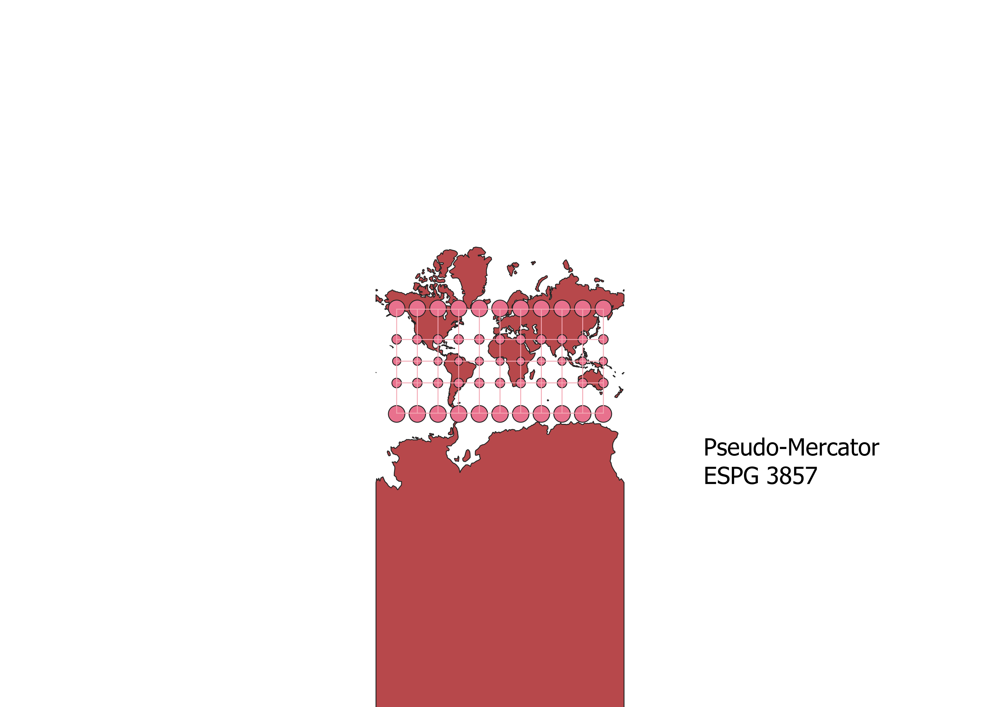
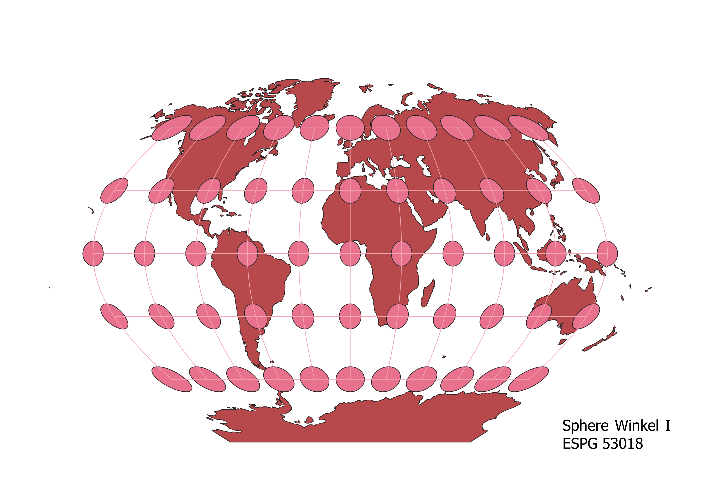
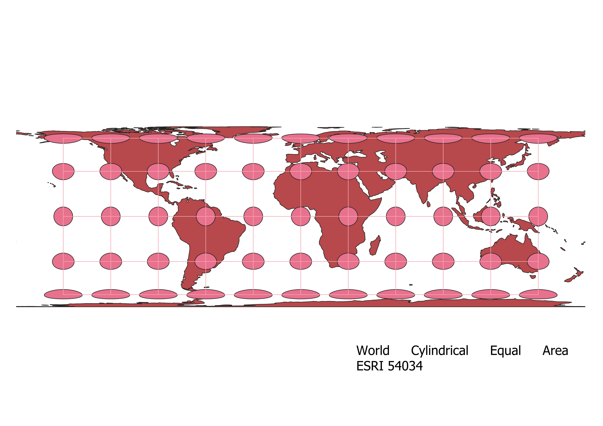
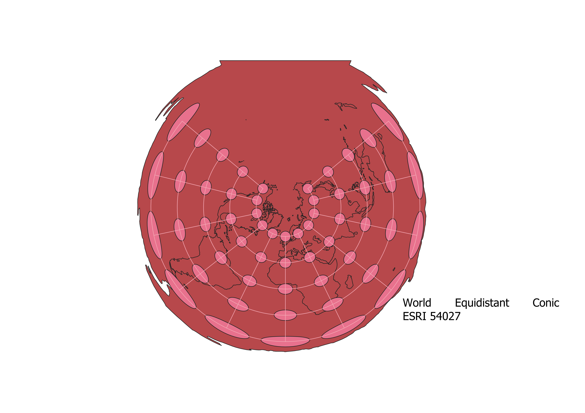
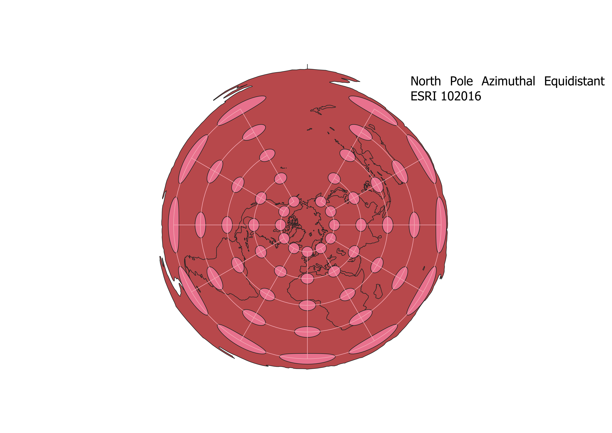

In this project I learned how to display images in different projections
Describe in your own words how you displayed the map in different projections using QGIS
In QGIS, I edited the projection of my data by using an icon in the bottom right corner of the window. I was able to search which projections I wanted with the "filter" feature, and from there I could apply the different projections to the map.
WGS84 Projection
Some observations

Aitoff Projection
Some observations

Pseudo-Mercator Projection
preserves direction between 80S and 84N

Sphere Winkel I Projection
preserves shape between 80S and 84N

World Cylindrical Equal Area Projection
preserves area between 80S and 84N

World Equidistant Conic Projection
preserves distance between 80S and 84N

North Pole Azimuthal Equidistant Projection
preserves distance at North Pole

South Pole Azimuthal Equidistant Projection
preserves distance at South Pole

World Behrmann Projection
preserves area between 80S and 84N

Now, you should add the following projections on your own:
EPSG: 3857, 53018, 54034, 54027, 102016, and two additional projections that you choose.
Data used for this project
Download Natrual Earth 1:10m Cultural Vector